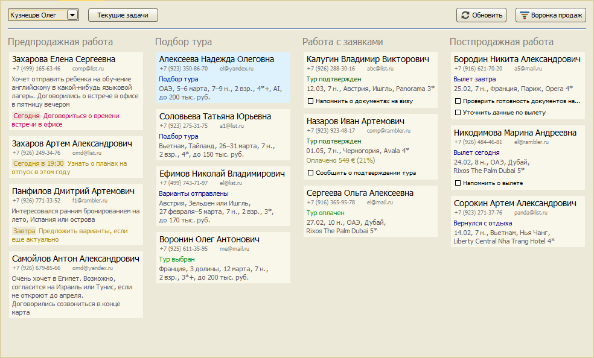
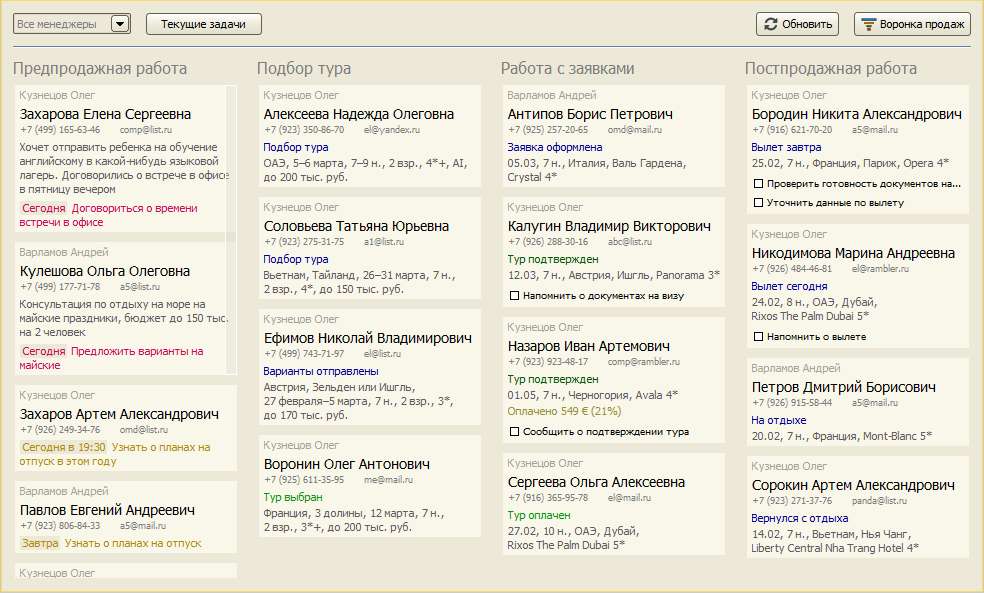

CRM
- О модуле CRM
- Основной экран CRM
- Карточка клиента
- Чек-лист по заявке
- Воронка продаж
- Основные сценарии работы в CRM
О модуле CRM
Модуль CRM позволяет автоматизировать процесс взаимодействия с клиентами, улучшить качество обслуживания, увеличить
продажи. Программа показывает оперативное состояние потенциальных и текущих продаж по каждому менеджеру и в целом по
фирме, что дает возможность руководителю контролировать процесс продаж и вовремя вмешаться в случае возникновения
проблем. Система хранит полную историю общения с клиентами, что помогает менеджерам анализировать предпочтения клиентов
и формировать подходящие им предложения.
Основной экран CRM
На главном экране CRM отображаются все клиенты менеджера, с которыми он работает в текущий момент. В системе выделяются
4 этапа работы с клиентом: Предпродажная работа, Подбор тура, Работа с заявками и Постпродажная работа. В зависимости от
того на каком этапе находится работа с клиентом, карточка клиента выводится в одну из 4-х колонок, соответствующих этапам.
Каждому клиенту присваивается статус, отражающий текущее состояние работы с клиентом. Например, если в данный момент
времени меенджер подбирает тур для клиента, то в карточке клиента будет установлен статус "Подбор тура". Также статус
тура определяет этап работы. Например, клиент со статусом "Тур подтвержден" находится на этапе "Работа с заявками".

Руководитель может видеть состояние дел в целом по фирме или по конкретному менеджеру.

Остались вопросы? Напишите нам на e-mail